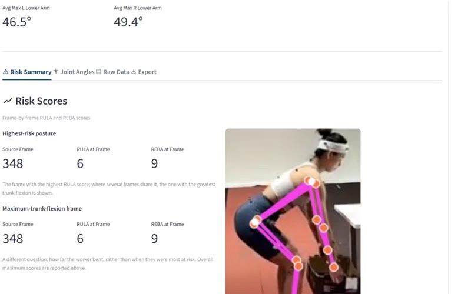
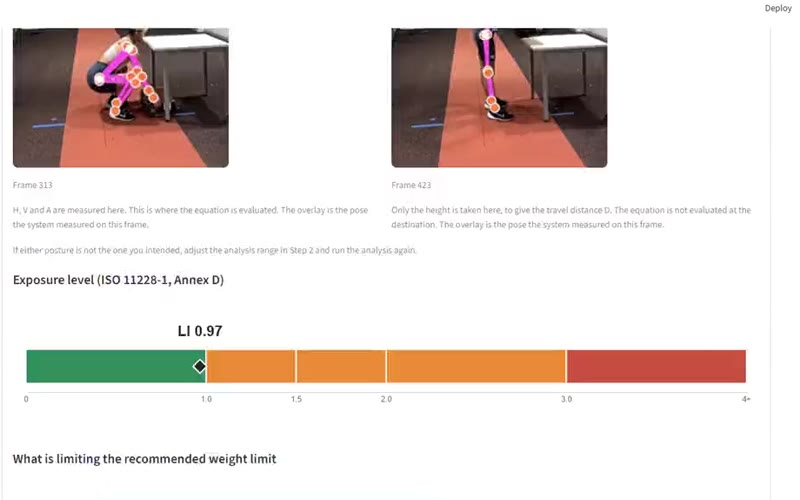
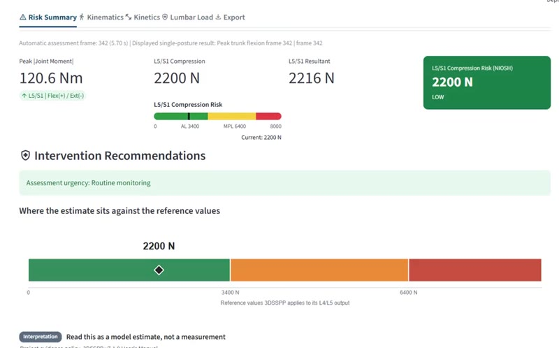
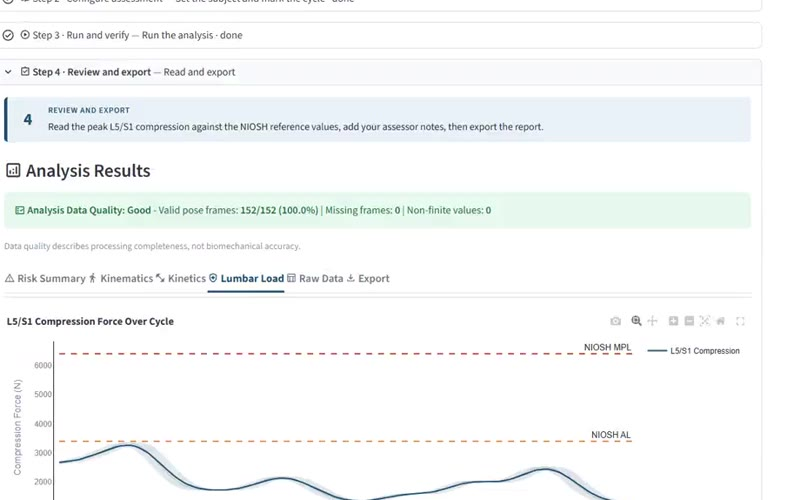

Module 1
Postural risk
RULA and REBA postural scoring.
Research summary · September 2026
An online video-based ergonomic assessment system that analyses workplace tasks from a single standard video, with postural, manual-handling and biomechanical outputs evaluated against laboratory reference methods.
The system is a research prototype. Results are from controlled laboratory lifting tasks, and the manuscript is in preparation. The user interface will be redesigned for field deployment.
Information on TuMeke and EtiScope is taken from publicly available sources (September 2026).
| TuMekeAI video assessment · San Francisco | EtiScopeWearable sensors · Melbourne | Our systemOnline video-based · University of Auckland | |
|---|---|---|---|
| Data capture | Smartphone video | Five wearable sensors on the worker | One smartphone video, recorded live in the browser or uploaded |
| Access | TuMeke app and web platform | iPad app with sensor kit | Web browser via a linkNo installation; works on phones, tablets and computers |
| Equipment on the worker | None | Sensors worn during the task | None |
| Postural risk | RULA, REBA | Aligned with REBA, RULA, MAC, ART, RAPPBack, neck and upper limbs; lower limbs not yet covered | RULA, REBAWhole body, frame by frame |
| Manual handling | Revised NIOSH, Snook tables, RSI | Task risk score (Consequential Risk Score) | Revised NIOSH Lifting EquationRecommended Weight Limit and Lifting Index |
| Biomechanical load | Not described publicly | Not described publicly | Joint moments, L5/S1 compression and shear |
| Dynamic analysis | Movement factorsRepetition, duration, force, grip, balance | Continuous sensor recording | Whole-cycle biomechanicsJoint kinematics, kinetics and spinal load across the movement |
| Validation reference | Expert rater (REBA)Weighted κ 0.52–0.64 · Balogh et al., 2025 | Industry project reportsAMPC, 2023; no peer-reviewed validation identified | Objective laboratory referenceMarker-based motion capture and 3DSSPP; measurement basis published in Applied Ergonomics |
| Reporting | Dashboards across sites, coaching cues | Dashboard and instant reports | Per-assessment PDF report with recommendationsMulti-site dashboards not yet developed |
| Stage | Commercial | Commercial | Research prototype, open to field validation |
Observational methods are time-consuming, labour-intensive and susceptible to inter-rater variability owing to their subjectivity. Each module was therefore evaluated against a laboratory reference method, and practical evaluation with expert end users was conducted separately.
Indicates agreement with a particular assessor. Because ratings vary between assessors, the result depends on the rater used as the reference.
Indicates accuracy against objective measurements recorded simultaneously with marker-based motion capture, and against 3DSSPP for biomechanical loading.
Laboratory lifting tasks performed by healthy adults. Square brackets show 95% confidence intervals.
Risk-category agreement [REBA 87.4–99.2%; RULA 85.1–97.2%]. Mean absolute score error: REBA 0.89, RULA 0.11 points.
Mean Lifting Index 1.00 from the system vs 1.05 from the reference.
Mean L5/S1 compression (N). Mean absolute error: compression 156 N (6%), moment 11.8 N·m (8%). ICC: moment 0.73 [0.51–0.86]; anterior–posterior shear 0.96 [0.92–0.98].
Upper-limb joint moments show lower agreement with the current reduced upper-body model and are reported as indicative only.
Expert end-user evaluation. Two expert ergonomists used the system and rated it 4.5 out of 5 overall on a Technology Acceptance Model (TAM) questionnaire. The system has since been refined based on their feedback, and the evaluation is continuing with further experts.
Recorded and reviewed in a standard smartphone browser; no app needs to be installed.
Recorded on a smartphone: Module 1 (postural risk), from live camera capture and real-time analysis to the exported PDF report (57 s, silent, with captions). Current research interface.
Four modules run from the same video.

RULA and REBA postural scoring.

NIOSH Recommended Weight Limit and Lifting Index.

Static joint moments and L5/S1 spinal compression and shear.

Dynamic biomechanics across full movement cycles, including joint kinematics, kinetics and spinal loading.
In construction manual handling, postural risk scores can be complemented by estimates of lumbar loading, which quantify the load on the lower back and the effect of changes to a task.
Evaluating the system on construction tasks and sites, extending the current laboratory evidence.
Assessing the same construction tasks with TuMeke, this system and experienced ergonomists against an objective reference.
Comparing postural risk and lumbar loading before and after changes to how work is done.